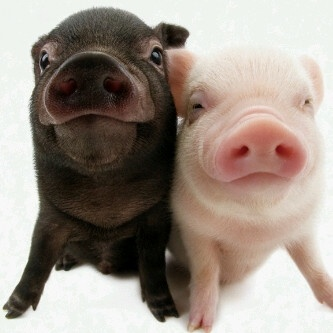

✩Интересные факты о свинках✩
Свинки умнее собак и могут решать задачи как 3-летние дети
Они узнают свое имя и откликаются на него
Могут играть в простые видеоигры с джойстиком
Запоминают до 30 других свинок "в лицо"
Различают жанры музыки - любят классику, но пугаются тяжелого рока
Некоторые "подпевают" своим хрюканьем
Могут танцевать под ритмичную музыку
Спят в обнимку и "целуются" носами
Общаются с помощью 20 разных звуков
Могут впасть в депрессию без компании
Утешают друг друга в стрессовых ситуациях
бегают со скоростью до 17 км/час
Их визг достигает 115 децибел
Нюх в 2000 раз чувствительнее человеческого
Могут находить трюфели под землей на глубине 1 метра
Видят цвета в отличие от многих животных
Их желудочный сок растворяет даже кости
Кожа свинок используется для пересадки людям
Потеют только через пятачок
꧁Цитаты про свинок꧂
Хрюшка не ведает диет — хрюшка ведает счастливые моменты
Они хрюкают, когда счастливы — нам бы так уметь выражать радость!
У хорошего свинаря свинка, как картинка
Свинья в золотом ошейнике — все свинья
Свинья не родит бобра, а сова не высиживает орла
Свинка — это комок счастья с пятачком и хвостиком-крючком